Titel: ALU
Dit verslag werd opgesteld door: Lorek Jeremi en Faisal Mohamed Ahmed
De oplossing bestaat uit de volgende bestanden (geef alle bestanden op):
Om te beginnen moeten we alle operaties van de ALU creëren.
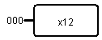
Je zet een constante met waarde 0 voor elke 4 bits.
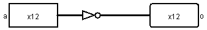
Je gebruikt een NOT-gate met 12 data bits.
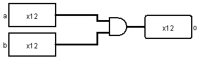
2 inputs verbonden met een AND gate (de gate heeft 12 data bits) die dan naar een output gaan.
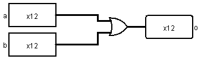
2 inputs verbonden met een OR gate (de gate heeft 12 data bits) die dan naar een output gaan.
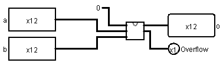
Optelling van 2 binaire getallen door gebruik te maken van de carry lookahead van project 2. De CarryIn is een constante 0 en er is naast de sum ook nog een output voor overflow.
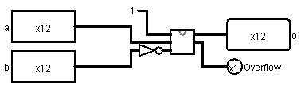
In dit circuit wordt de aftrekking van binaire getallen bereikt door de NOT-gates die de bits van het getal b omkeren, waardoor het one's complement van b wordt gecreëerd. Vervolgens zorgt de extra '1' die aan het circuit wordt toegevoegd voor de conversie naar two's complement.
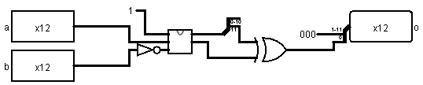
Dit circuit implementeert een 'kleiner dan' functie (less than) met behulp van een substractor. De subtractor voert een aftrekking a - b uit, en als a kleiner is dan b, zal het resultaat negatief zijn, wat in een binair systeem wordt weergegeven als een '1' op de meest significante bit (MSB) van het resultaat, als we two's complement notatie gebruiken. De XOR-poort zorgt dat als er Overflow is dat het resultaat verbetert wordt en niet verkeerd wordt gegeven in de output.
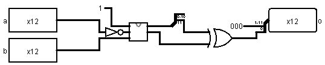
Dezelfde logica als daarnet maar dan met NOT van de eerste input.
Er wordt gebruik gemaakt van XNOR-gates want bij een XNOR-gate is de output enkel 1 als beide inputs gelijk zijn aan elkaar. Al deze inputs in 1 AND-gate zorgt voor de output.
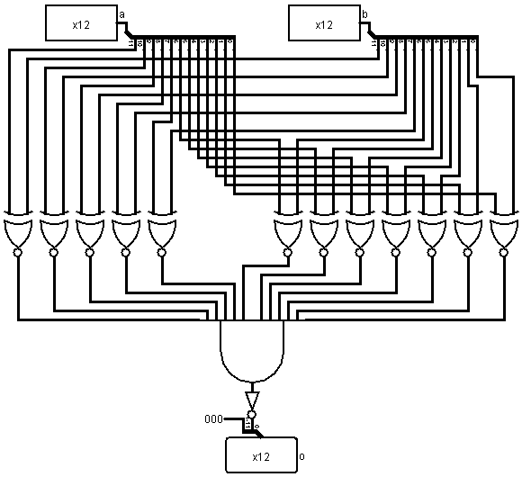
Hetzelfde als hierboven maar de output wordt ge-NOT.
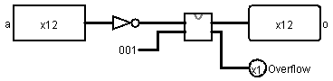
De numerieke inverse wordt berekent door gebruik te maken van de add functie, die we eerder hadden gecreëerd. De input wordt ge-NOT en vervolgens opgeteld met 1 om de gevraagde inverse te bekomen. Er is nog een output voor Overflow voor als het gevraagde getal niet in de range is van de output.
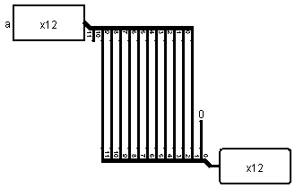
Alle bits worden met 1 plaats naar links verschoven
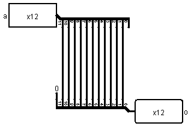
Alle bits worden met 1 plaats naar rechts verschoven.
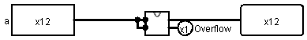
Het binaire getal wordt met zichzelf opgeteld. We maken gebruik van de add functie die eerder gedefinieerd is.
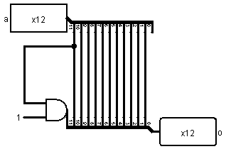
De input waarde wordt gedeeld door 2 door alle bits met 1 plaats naar rechts te verschuiven. Indien de MSB van de output 1 is dan moet, dat ook zo zijn bij de output, daarom wordt er gebruik gemaakt van de AND-gate.
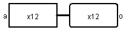
Er gebeurt niks, de input is dezelfde als de output.
Nu gaan we de ALU implementeren. Om de ALU-codes te doen werken hebben we een multiplexer nodig. De 4 bit input voor de ALU-code verbinden we met de multiplexer en dan verbinden we al de functies op volgorde met de multiplexer. Deze multiplexer verbinden we dan uiteindelijk met de output van 12 bits. We verbinden dan al de functies hun inputs met de inputs a en b waar nodig. Uiteindelijk pakken we nog een tweede multiplexer voor de overflow. De output van de multiplexer verbinden we met de overflow output. De inputs van de multiplexer worden verbonden met de functies die een overflow hebben.
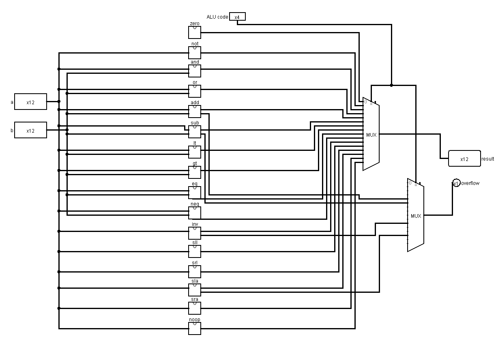
Na alles te testen met het gegeven python script, blijkt het dat er in de functies geen errors of fouten zijn.